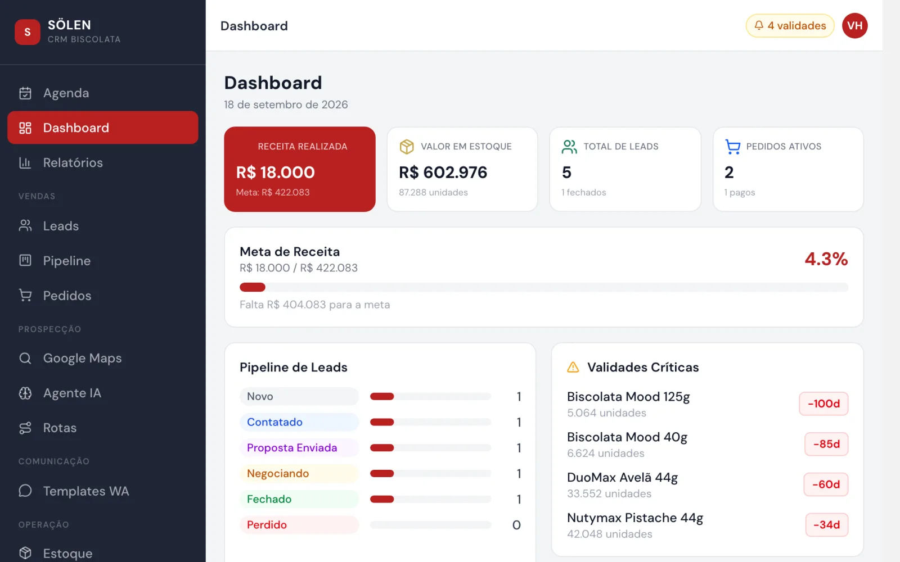
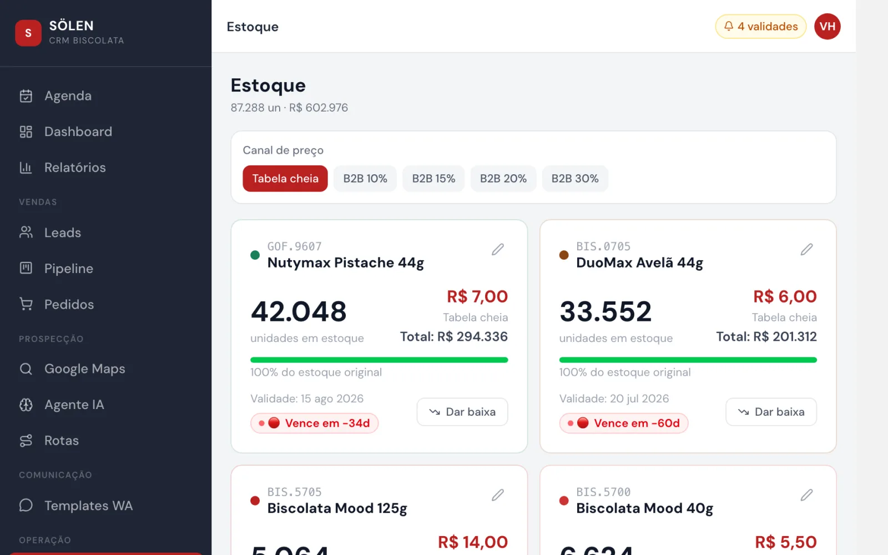
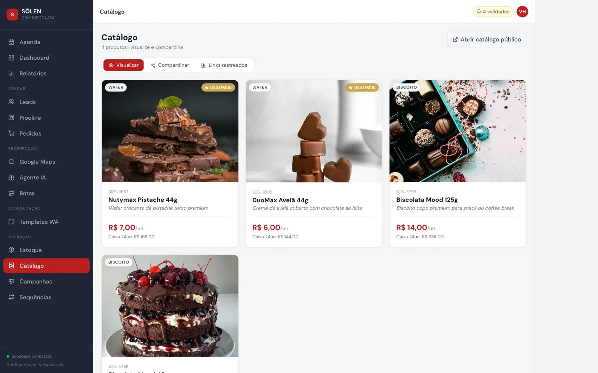
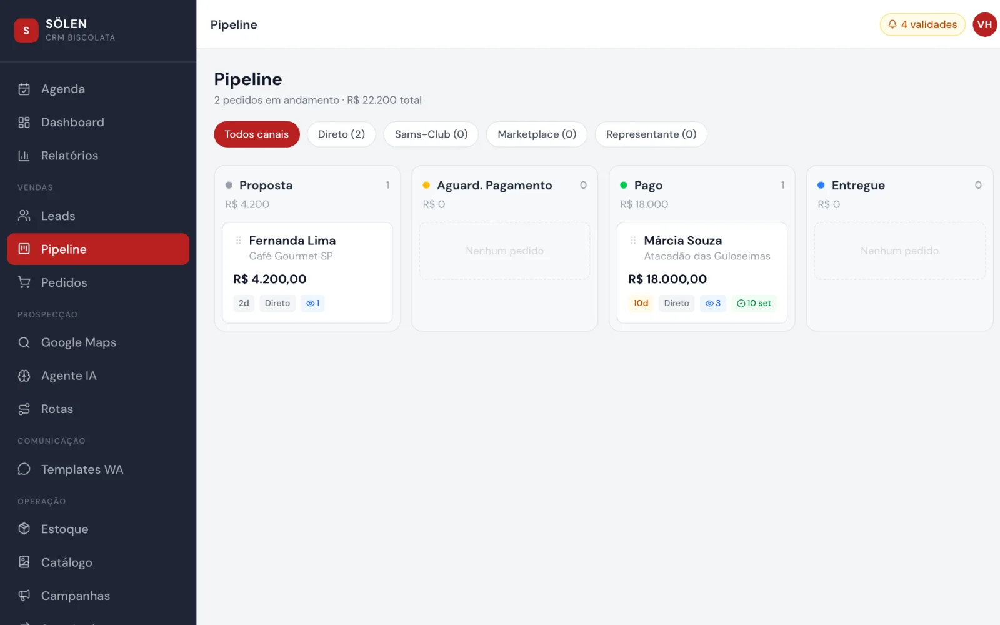
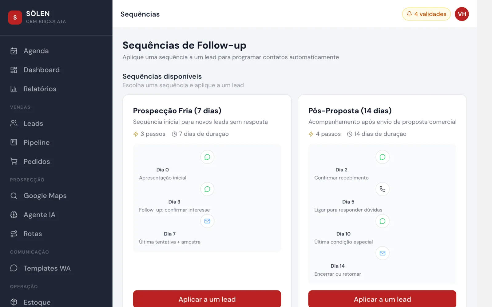
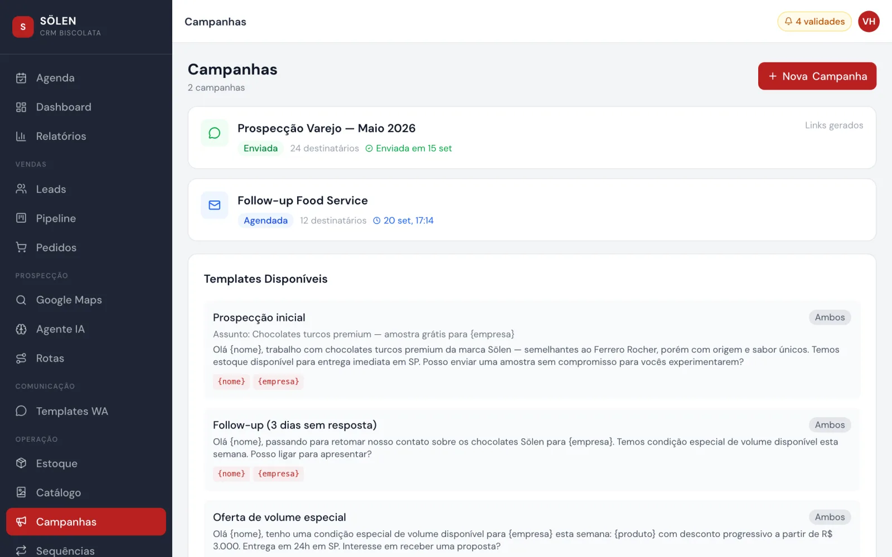
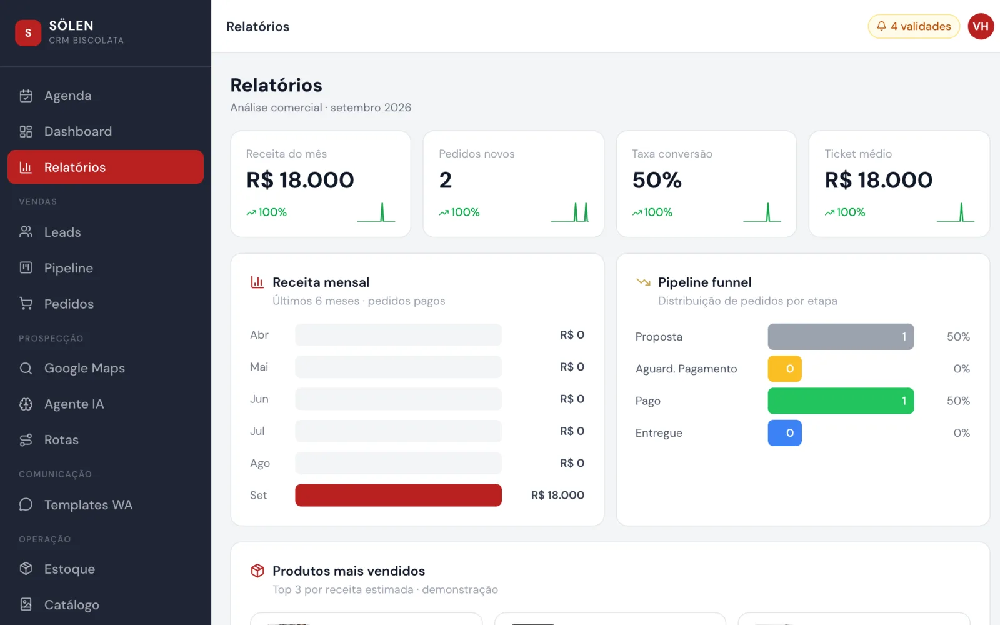

CRM de vendas com prospecção por IA
A distribuidora acha o cliente no Google Maps, a IA qualifica e o vendedor fecha pelo WhatsApp

O que muda no seu negócio
O vendedor abre o dia sabendo quem cobrar, quem está esfriando e qual lote vence primeiro. Não existe mais lead esquecido: a sequência de follow-up avisa na hora certa, com a mensagem pronta.
E a prospecção deixa de ser garimpo. Escolha o tipo de negócio e a cidade, e a lista chega pontuada pela IA, com a primeira mensagem já escrita.
O problema
Distribuidora pequena vende por WhatsApp e controla cliente em planilha. O lead que não respondeu some da memória, a proposta sai com desconto diferente a cada vendedor e o estoque vence na prateleira porque ninguém olhou a validade a tempo.
Prospectar é pior: horas no Google procurando mercado por mercado, sem saber qual vale a ligação.
O que o sistema faz
- Agenda do dia com o que é urgente, o que pede atenção e o que já fechou.
- Prospecção no Google Maps por tipo de negócio e cidade, importando direto como lead.
- Agente de IA que pontua cada lead e escreve a primeira mensagem.
- Sequências de follow-up com dias e canais definidos, aplicadas a um lead com um clique.
- Pipeline por canal: venda direta, atacarejo, marketplace e representante.
- Propostas em PDF com política de desconto por volume e link que avisa quando o cliente abriu.
- Estoque com alerta de validade e tabela de preço por canal.
- Catálogo público para compartilhar, campanhas e rotas otimizadas para visita.
Telas






O que prova a engenharia
- 14
- telas, da agenda do dia às sequências de follow-up
- 4
- canais de venda no mesmo pipeline
- 9
- tabelas: lead, pedido, estoque, campanha e o histórico de cada contato
O estoque baixa sozinho quando o pedido é pago
Ninguém precisa lembrar de atualizar a planilha. A mudança de status do pedido é o que move o estoque.
Desconto é regra, não negociação de corredor
A política por volume está no sistema: até cinco mil, dez por cento; e assim por diante. Todo vendedor oferece a mesma condição.
Validade tem cor
Faltando trinta dias, o produto fica amarelo; faltando quinze, vermelho, e entra na agenda do dia. O lote que vence primeiro sai primeiro.
Stack
React 19, TypeScript e Vite 8, com Tailwind 4, Supabase (Postgres) e publicação na Vercel. Inteligência artificial para qualificar leads e montar o briefing do dia.